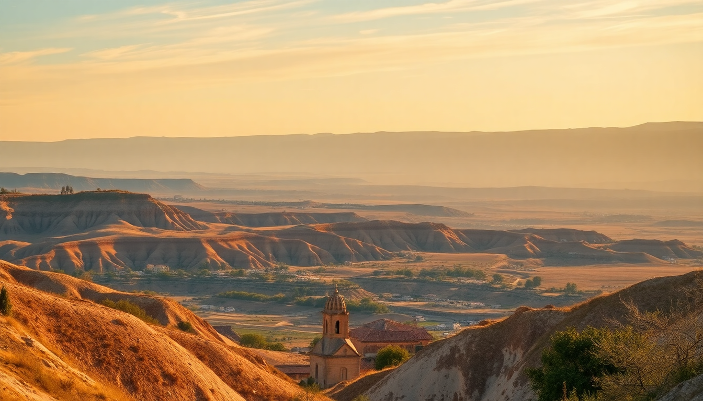

Where to Stay in Cappadocia: Best Areas for Every Budget

I landed in Cappadocia not knowing a cave hotel from a fairy chimney, and after a week bouncing between three different bases, I learned that where you sleep changes everything. Göreme is the chaotic social hub, Uçhisar is the quiet luxury perch, and Ürgüp splits the difference with wine bars. Here’s how to pick your spot without second-guessing.
Why should I stay in Göreme?
Göreme is the default for a reason—it’s compact, walkable, and packed with budget cave hotels within a five-minute stroll of restaurants and the open-air museum. I stayed at Maccan Cave Hotel for three nights, and while the room was small, the rooftop terrace gave me an unobstructed balloon-launch view without paying Sultan Cave Suites prices.
- Maccan Cave Hotel — mid-range cave rooms with a killer terrace, breakfast included.
- Sultan Cave Suites — the Instagram-famous spot; book six months ahead for a room with a balcony.
- Köşk Restaurant — cheap pide and lentil soup two blocks from the bus station.
- Göreme Open Air Museum — a ten-minute walk; go at 8 a.m. to beat the tour buses.
The downside: Göreme is loud. Turkish pop music from rooftop bars drifts until midnight, and the cobblestone streets get clogged with tour groups by 9 a.m. If you want quiet, skip the center and head uphill toward the Aydınlı neighborhood.
Is Uçhisar worth the higher price?
Yes, if you value views over nightlife. Uçhisar sits on the highest point in Cappadocia, crowned by a massive rock castle you can climb for 20 TL. I spent two nights at Museum Hotel Cappadocia—it’s the priciest place I’ve ever booked, but the private vineyard, heated pool, and genuine antique-filled rooms justified the splurge for a milestone birthday.
- Museum Hotel Cappadocia — luxury cave suites with a resident tortoise and a breakfast spread that includes honeycomb straight from the comb.
- Kaya Cave Hotel — a more affordable alternative with a similar castle view.
- Uçhisar Castle — sunset here beats any balloon photo; bring a headlamp for the descent.
- Seki Restaurant — fine dining inside Argos in Cappadocia; the manti (Turkish dumplings) with burnt butter is worth every lira.
Uçhisar is car-dependent. There’s no real town center—just a few shops and two good restaurants. If you’re not renting a car or hiring a driver, you’ll get bored after two days.
What about Ürgüp for food and wine?
Ürgüp feels like a real Turkish town, not a tourist set piece. It’s where locals go for dinner, and the wine scene is legit—Cappadocia’s volcanic soil produces drinkable reds. I stayed at Tasin Konağı , a boutique hotel carved into a hillside with a hamam and a courtyard full of lemon trees.
- Tasin Konağı — boutique cave hotel with a traditional Turkish bath; book the suite with a private terrace.
- Şömine Restaurant — fireplace dining in winter; the testi kebab (clay-pot stew) is the house specialty.
- Turasan Winery — free tasting room in town; buy a bottle of Öküzgözü for 60 TL.
- Ürgüp Bus Station — connects to Göreme (15 min) and Nevşehir (20 min) for 10 TL.
Ürgüp lacks the immediate valley access of Göreme. You’ll need a dolmuş (minibus) or taxi to reach the main hiking trails. But the trade-off is better food, quieter nights, and a more authentic vibe.
Should I stay in Avanos or Ortahisar?
Avanos is the pottery town on the Kızılırmak River—worth a day trip but not a base unless you’re taking a ceramics workshop. I visited Chez Galip Hair Museum (yes, a cave full of hair samples from women worldwide—weird but free) and bought a bowl from Güray Seramik.
Ortahisar is a smaller, quieter version of Uçhisar with a castle you can actually climb inside. I didn’t stay here, but friends who booked Sosel Cave Hotel raved about the host’s homemade breakfast jams.
- Güray Seramik — watch potters throw clay; prices are fair and they ship internationally.
- Sosel Cave Hotel (Ortahisar) — family-run, five rooms, incredible hospitality.
- Ortahisar Castle — fewer crowds than Uçhisar; bring sturdy shoes for the spiral staircase.
Avanos is a solid lunch stop, not a lodging hub. Ortahisar works if you want total silence and a local host who’ll draw you a map of hidden hiking trails.
What’s the best area for balloon views?
Göreme’s Aydınlı neighborhood and Uçhisar’s castle ridge both deliver. In Göreme, the Kelebek Special Cave Hotel rooftop is legendary—I watched 80 balloons launch directly overhead at 6:30 a.m. In Uçhisar, Museum Hotel ’s terrace faces the valley, so you see balloons drift past rather than rise above you.
- Kelebek Special Cave Hotel (Göreme) — book the “balloon view” room; it’s worth the premium.
- Museum Hotel (Uçhisar) — the hot-air balloon view from the infinity pool is unbeatable.
- Sunset Point (Göreme) — free public viewpoint; arrive by 5:30 a.m. to claim a spot.
Skip Ürgüp for balloon photos—the valley is too wide and the balloons appear tiny. Stick to Göreme or Uçhisar if the sunrise show is your priority.
How do I choose between a cave hotel and a stone house?
Cave hotels are carved into the soft tuff rock—they stay cool in summer and warm in winter, but they’re dark and can feel claustrophobic. Stone houses are built from volcanic stone blocks; they’re brighter and often have higher ceilings. I preferred the stone house at Tasin Konağı over the cave room at Maccan because I could actually read without a lamp at noon.
- Cave room — authentic, damp in spring, low doorways (I hit my head twice).
- Stone house — brighter, more spacious, often cheaper.
- Mixed hotel — many places like Sultan Cave Suites offer both; ask for photos of the exact room.
If you’re tall or claustrophobic, go stone. If you want the Instagram shot of a cave bathtub, go cave. Neither is “better”—just different.
FAQ
What is the cheapest area to stay in Cappadocia? Göreme has the widest range of budget options. I paid 30 EUR per night at Maccan Cave Hotel in low season (November). Dorm beds in hostels like Cave Hostel Göreme start around 12 EUR. Ürgüp and Avanos are slightly cheaper than Göreme, but you’ll spend more on transport.
Is it safe to walk around Cappadocia at night? Yes, but stick to main streets in Göreme and Ürgüp. I walked from Köşk Restaurant back to Maccan at midnight without issue—just watch for stray dogs (they’re territorial but not aggressive). Avoid the unlit paths between valleys after dark; the terrain is uneven and there are no streetlights.
Do I need a car to stay in Uçhisar or Ürgüp? Not strictly, but it helps. Uçhisar has one dolmuş per hour to Göreme (10 minutes, 8 TL). Ürgüp’s dolmuş runs every 20 minutes to Göreme. I rented a car from Nevşehir Airport for 25 EUR per day—it paid for itself in flexibility, especially for sunset at Red Valley and dinner in Çavuşin.
Conclusion
- Göreme is your best bet for first-time visitors on a budget—walkable, social, and balloon-view central.
- Uçhisar delivers luxury and panoramic views, but you’ll need transport or deep pockets.
- Ürgüp wins for food, wine, and a local feel—skip it if you want to roll out of bed onto a hiking trail.
- Avanos and Ortahisar are excellent day trips, not primary bases.
- Cave vs. stone is a personal call—try a cave room for one night, then switch if the darkness gets to you.